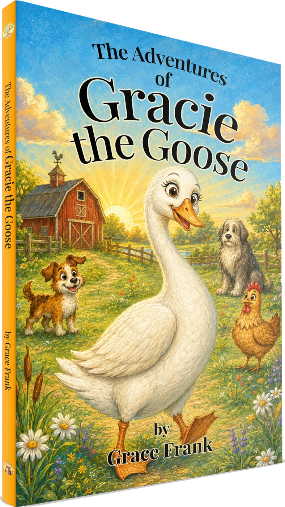
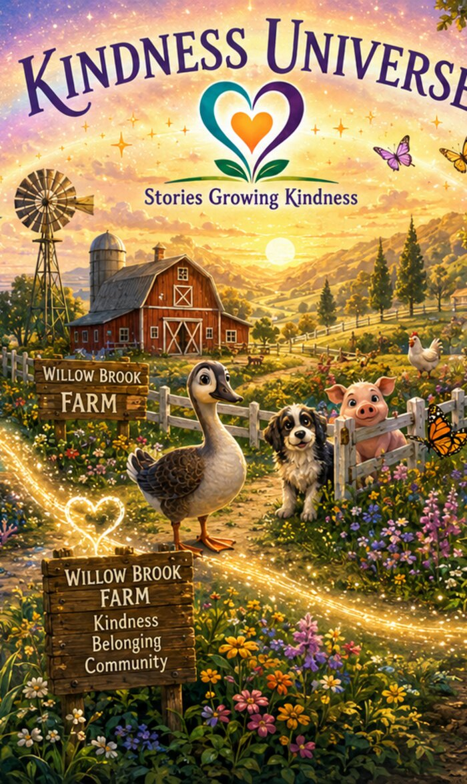
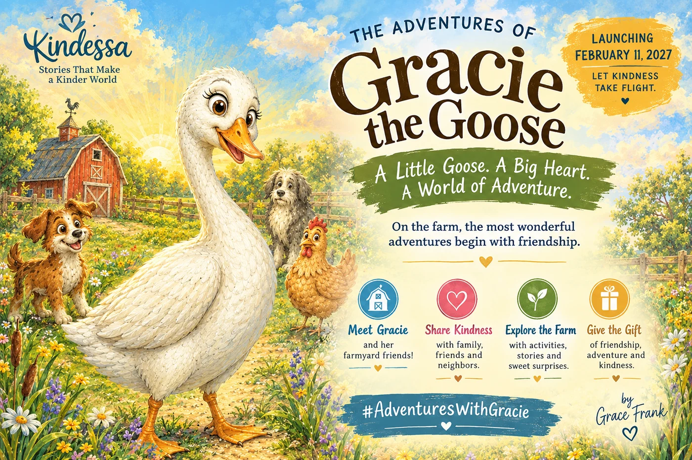

Kindness & Compassion
Noticing when someone needs care and discovering how even a small act of help can make a difference.

A curious goose. A farm full of friends. An adventure waiting around every corner.
Welcome to Willow Brook Farm, where Gracie’s bright eyes and curious nature lead her toward unexpected discoveries—and some wonderful friendships.
Join this adventurous Chinese goose and her farmyard friends as they investigate mysteries, help one another through challenges, and discover how kindness can turn an ordinary day into something special.
With her long neck, brown-gray feathers, and proud walk, Gracie brings a little queen-of-the-farm spirit wherever she goes. From the barn to the orchard, she is eager to explore—and a mysterious wooden crate is far too interesting to overlook.
When her investigation brings her face-to-face with Max, a scruffy puppy newly adopted by the farmer, an unexpected meeting becomes the beginning of a friendship.
With Max, Penny the chicken, and the other farm animals, Gracie discovers that adventures bring more than surprises. They offer chances to trust a friend, understand someone different, lend a helping wing, and find joy together.
There are questions to ask, mistakes to learn from, and plenty of moments to laugh along the way.
Every discovery means more when you have someone to share it with.

Through Gracie’s discoveries and friendships, children encounter feelings and choices they recognize from their own lives.
Noticing when someone needs care and discovering how even a small act of help can make a difference.
Asking questions, exploring new places, and learning to balance an adventurous spirit with a little thoughtful caution.
Getting to know someone new, appreciating differences, and making room for each other.
Learning to accept help, listen to another point of view, and face uncertain moments together.
Finding delight in unexpected friendships, shared discoveries, and the everyday surprises of farm life.
Sign up for book news, release announcements, and updates from Gracie’s world.

Discover the world of Gracie the Goose through companion stories from Wisdom Bedtime Stories.
Inspired by the friendships and discoveries of Willow Brook Farm, Gracie’s stories bring curiosity, kindness, and gentle humor to time spent together.
Follow the channel for available stories and news of Gracie’s upcoming adventures.
Travel beneath the waves to Tidepool Town, where a curious young sea turtle and her ocean friends discover how trust, friendship, and kindness grow.